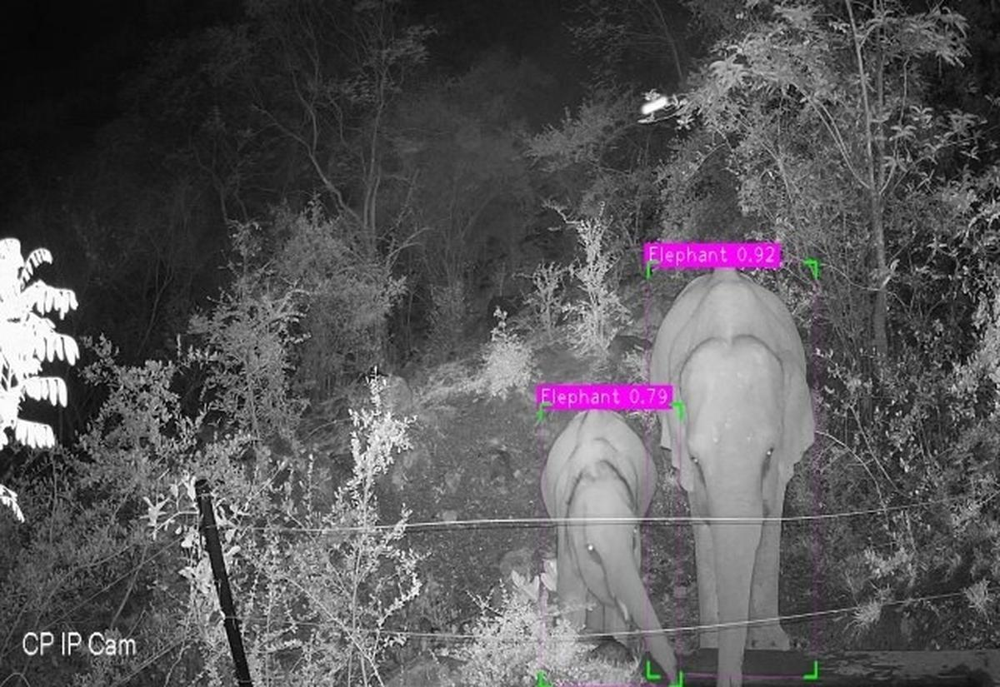

Live Elephant Activity & Sensor Status
Mitigation Status
Deterrent Units Online: 15/15
Last Command: Activate Deterrent Unit Alpha (8:25 PM)
Response Time: 2.1 seconds (Successful Activation)
System Check Complete
Regional HEC Summary (24h)
Total Incidents: 5 (All resolved)
Total Elephants Monitored: 12 (via Collars & Detection)
False Alarms Rate (24h): 10% (Low)
View Regional Status
CRITICAL ALERT (Level 4/4)
Location: Village Bhilai | Sensor ID: S-42
Movement: ENE at 6.8 km/h
Distance to Danger Zone: 350m
Danger Radius ($1 \text{ km}$): BREACH IMMINENT!
Confirmation: Thermal + Vibration (98% Conf.)
Activate Deterrents
*SMS alert sent to 12 officials.
Emergency Contacts
Forest Official (On-site): +91 98765 12345 (Direct)
Local Police (Quick Response): 100 or +91 99999 54321
Medical Emergency: 108 (Ambulance)
Call Forest Team
Crowdsourced Intel
Last Local Report: 45 mins ago (Farm Sector D)
Report Status: Awaiting verification by Sector B
Submit New Sighting
GPS location and photo required for submission.
System Health & Network
Network Health: Online (4G)
Offline Sync Queue: 0 Events (Ready to store when network is down)
Avg. Temp: $28^\circ\text{C}$ | Wind: 4 km/h